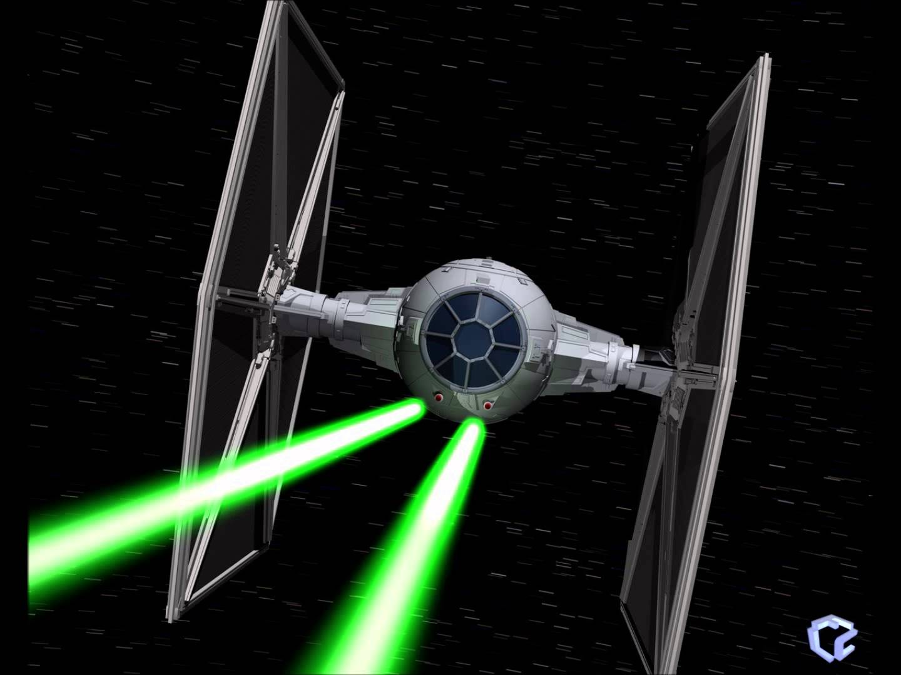
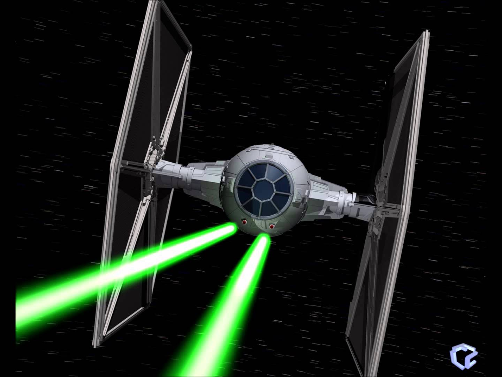
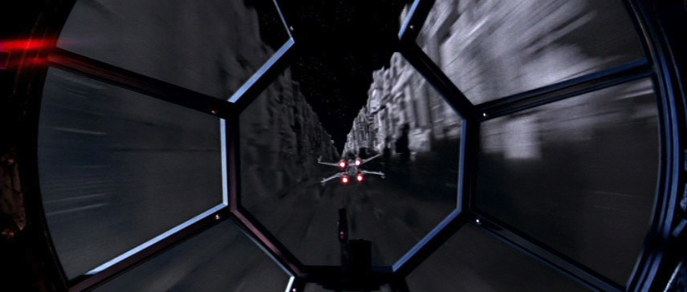
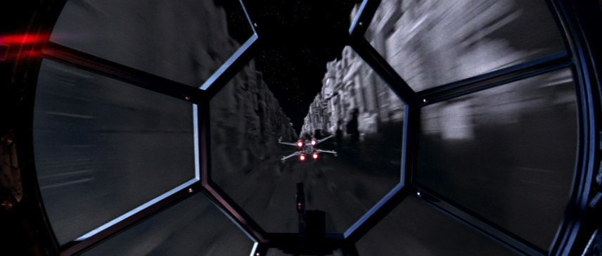
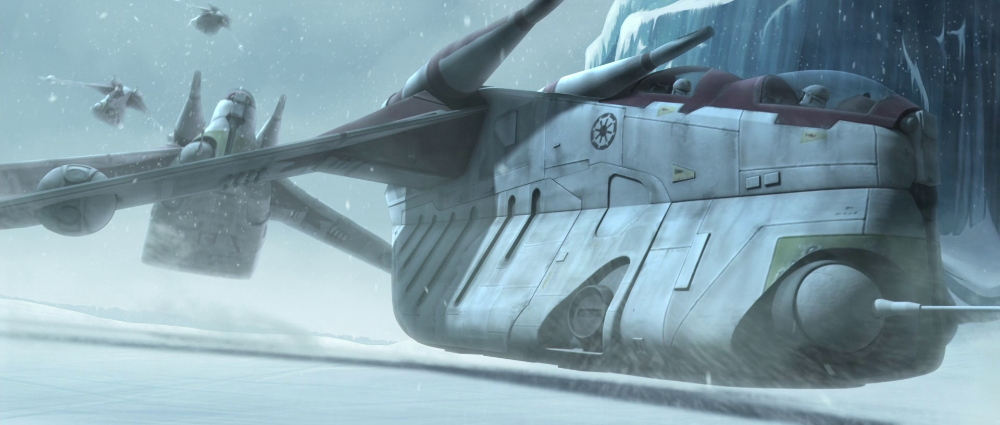
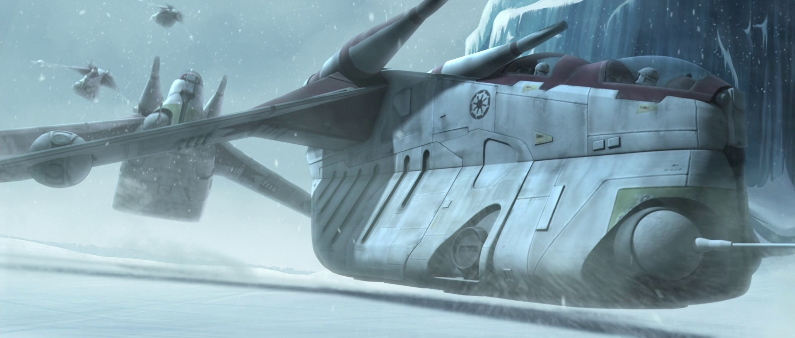

X-wing starfighters were a type of starfighter marked by their distinctive S-foils that resembled an 'X' in attack formation. During the Galactic Civil War, the Rebel Alliance used T-65B X-wing starfighters in a number of battles, including the Battle of Yavin and the Battle of Endor.
The X-Wing was originally developed for the Galactic Empire but the entire Incom design team defected with the prototypes to the Rebel Alliance, ending the contract. Despite this, however, at least one X-wing was stolen by a Stormtrooper.
Approximately thirty years later, a different variation of X-wing, the T-70 were used by the Resistance, whereas a more advanced model, the T-85, was used by the New Republic Starfleet.
Manufacturer: Incom Corporation
Class: Assault starfighter
Armaments: 4 Laser Cannons, Proton Torpedo Launcher(s)
Crew: Pilot, Astromech droid
Length: 12.5 meters
Beam: 10.2 meters
Height: 4.2 meters


 



 



 
